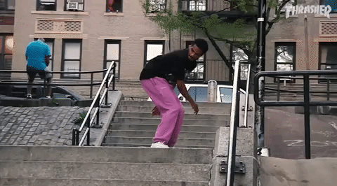
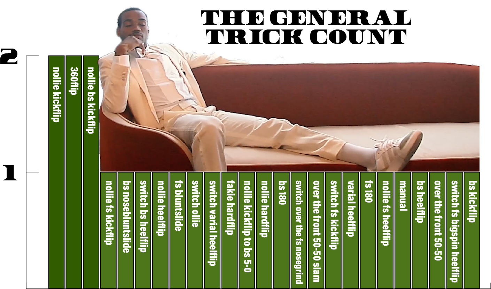
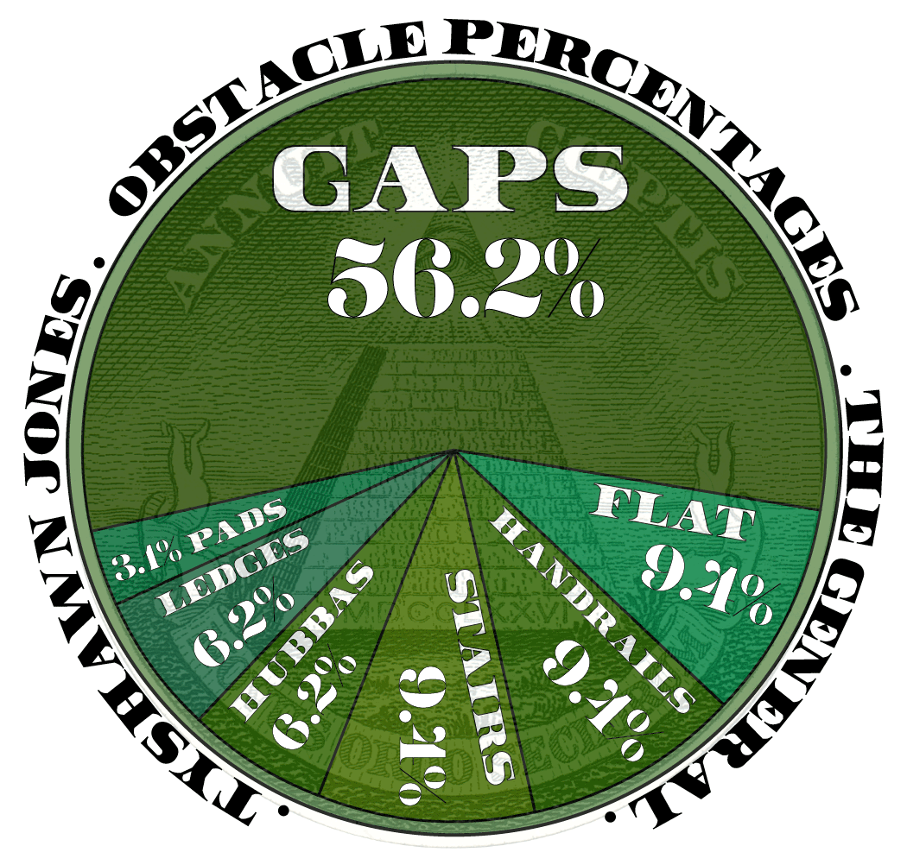
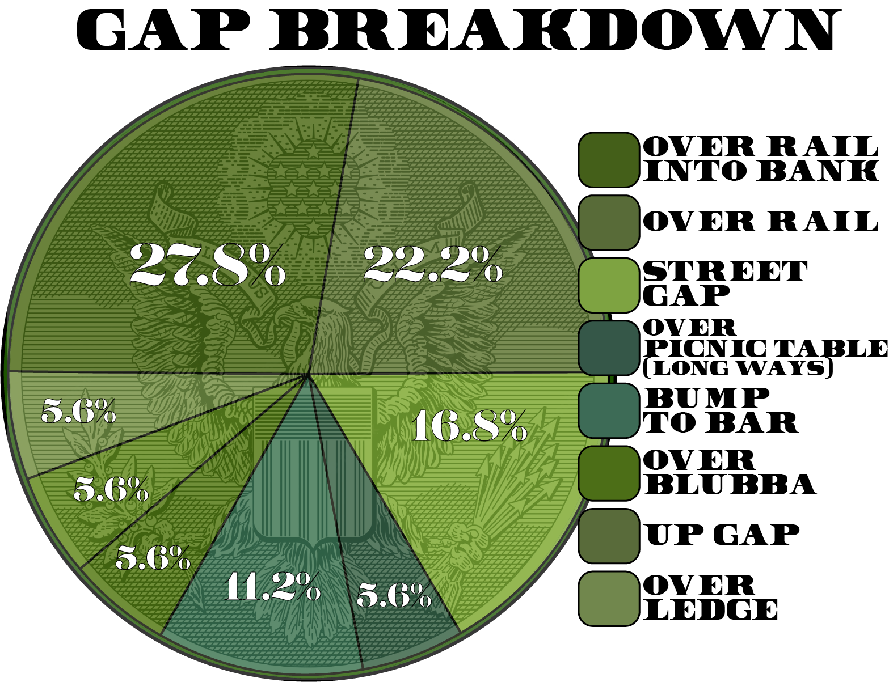
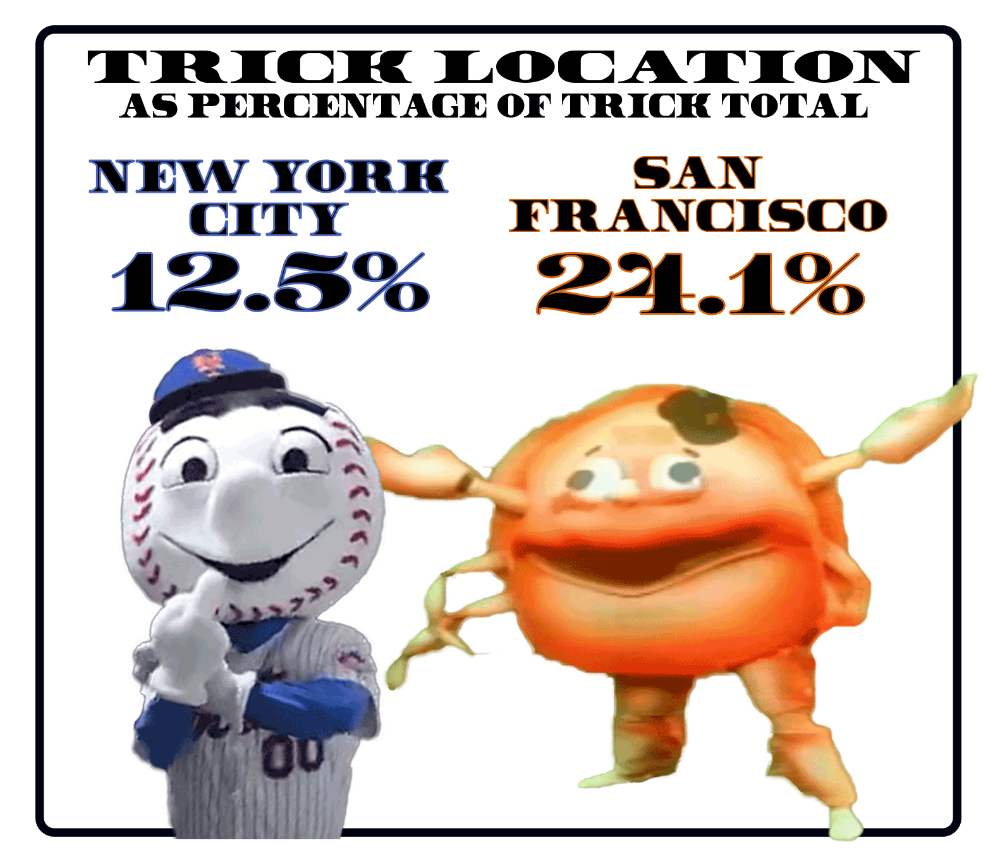
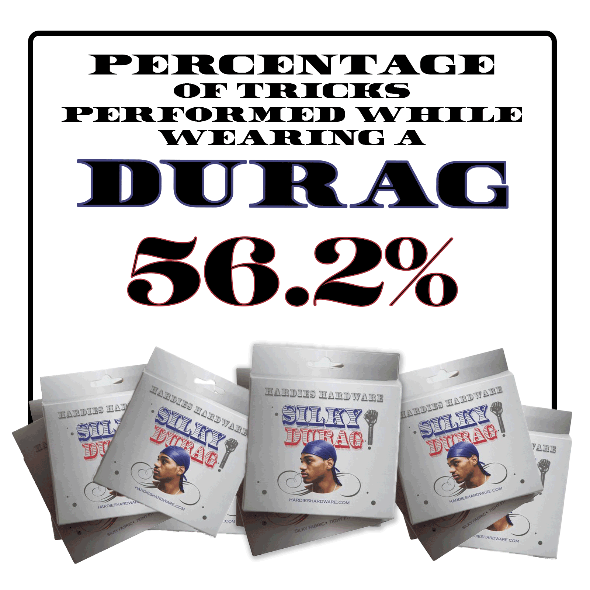
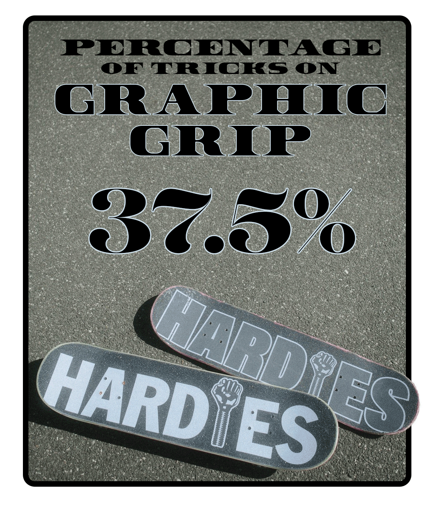
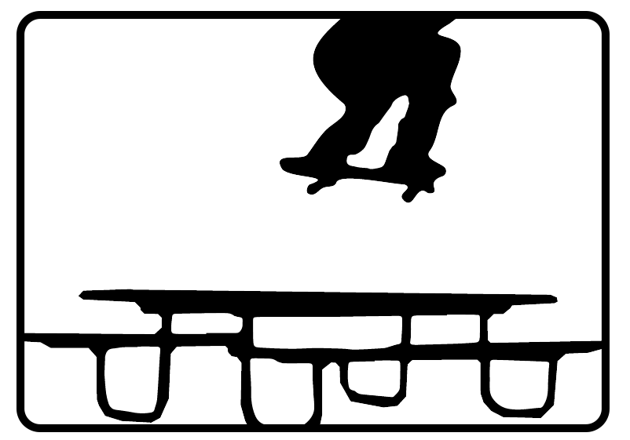

Much to the delight of everyone except Louie Lopez and perhaps Jason Dill, Tyshawn Jones launched his campaign to capture his second Skater of the Year trophy on October 21st, 2022, with the release of The General, a 4 and 1/2 minute standalone part co-branded by Hardies and Adidas. Never one to half-step, Tyshawn makes it clear that he is playing to win, be it skate tricks, SOTY strategies, shoe sales, or dog breeding.
So, let’s get down to business and crush some numbers on The General.
Total Running Time: 4 minutes 36 seconds
Total Number of distinct Tricks: 28
Total Number of Clips: 27
First, let’s just set aside the superlatives, of which there are many. It can be hard to quantify just how joyously exciting or shocking a clip can be, but I can report that no less than 5 tricks were marked as “Holy Shit!” on our spreadsheet, which is about 4 or 5 more instances than typical.

The General contains 32 tricks, of which just 4 are second angles. Setting aside those 4 second angle clips from the set, we get a 28 trick part. Counting those up, we get a picture of Tyshawn’s bag:

What we see here is a well calculated trick inclusion plan executed to perfection. Tyshawn clearly specializes in pop, with almost no focus on tech manual or ledge trick combos of any kind. He doesn’t do interesting drop-ins or no-complies or body varials. He doesn’t shuv out or 270 out. He doesn’t skate bowls or ramps. He doesn’t touch his board.
Yet, even with such a limited discipline on view in this part, Tyshawn somehow doesn’t repeat himself. 89.3% of his tricks are unique. The highest trick count is just a ‘2’, and those three tricks were only repeated as pre-banger flatground entertainment. These aren’t just willy-nilly hammers getting sprayed around; Tyshawn is coming at this edit with the strategy of some kind of military leader, like a Lieutenant Colonel or something.
Further analysis of trick counts shows a bold 31% of tricks were nollie, 24.1% of tricks were switch, and, not to be left out, we got 1 fakie trick as well. In fact, if you group tricks into natural footing (regular / fakie) and opposite footed (switch / nollie), you get a perfect 1:1 ratio of 16 tricks a piece.
The heelflip to kickflip ratio is also an impressively well-balanced 9:10.
Next, let's check a chart that tracks the Obstacles skated in The General:

As you can see, a breakdown of the obstacles further confirms the remarkable directness of Tyshawn’s skating.
With each trick (including second angles here) representing approximately 3.1% of the whole, we see a single instance of manual (the humanizingly sketchy after-hammer China Banks bench wheelie), a little bit of ledge (two monstrous Bay Block bangers), and just a smidge of handrail and hubba action. The General is all about the pop, and that means going over, across, and down Gaps a majority of the time.
Similarly; A big set stairs.

Half the Gaps involve clearing rails and taking a drop (either to flat or into a bank), by Tyshawn also tricks over streets, kills the bump to bars, and clears obstacles off flat (though surprisingly no trash cans).
More Numbers
Our computers tracked spots as best it could, and there were plenty of famous places being skated from coast to coast. We thought it worth illustrating that there were almost twice as many confirmed SF clips than NYC.

The General contained 2 slams, 4 ‘lifestyle’ clips, and 3 instances of Tyshawn celebrating after a trick or otherwise showing emotion, which was all the more potent given the serious demeanor Jones often portrays.

A quarter (8) of the tricks were presented in slow motion, which actually seems kinda low considering this part was genuinely (and we quote the Thrasher description) “All killer, no filler”. We did not include any slow motion occurring during the lifestyle clips.
And, finally, the important observations:


Needless to say, The General is an absolute mind bender of a skateboard video. How will it feel when complimented by the anticipated follow-up video of Tyshawn’s 2022 run? What do Louie and Cons have up their sleeve? Will durags, shorts, and graphic griptape going to be on-trend in 2023?

Argue with us about it on the 4Ply Instagram and Twitter accounts. Or hit us up and let us know what other parts’ numbers you would like to see crushed.